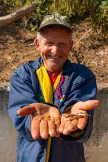
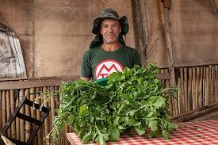

João, 67 anos
Voluntário
Aposentado e muito ativo na comunidade. Foca na experiência de leitura e acessibilidade.
Necessidade: Letras grandes e alto contraste.

Carla, 35 anos
Coordenadora
Responsável pela ONG VerdeCidade. Foca em gestão de dados e agilidade nas tarefas.
Necessidade: Dashboards rápidos e informações claras.

Marcos, 42 anos
Morador Local
Ajuda no plantio direto e na rega. Utiliza o sistema pelo celular enquanto está na horta.
Necessidade: Botões grandes e facilidade no uso mobile.